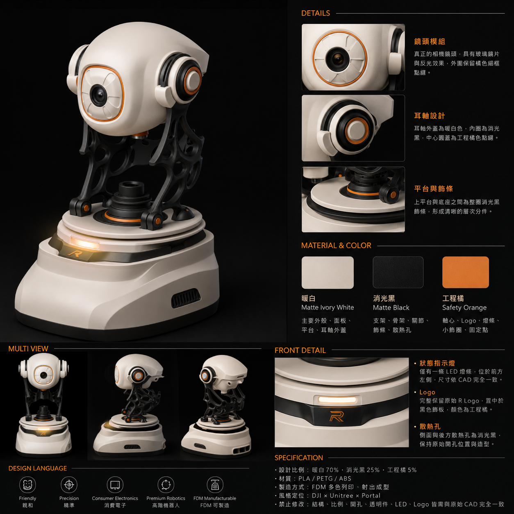
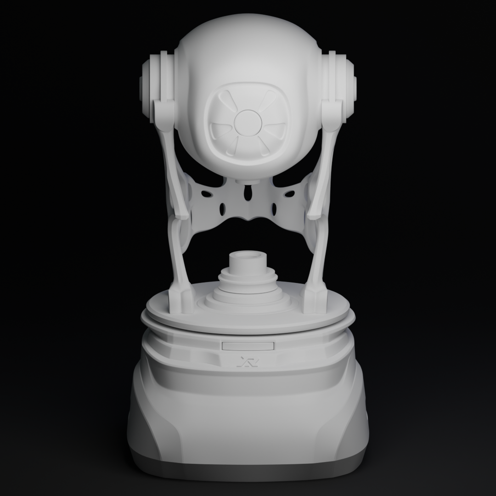
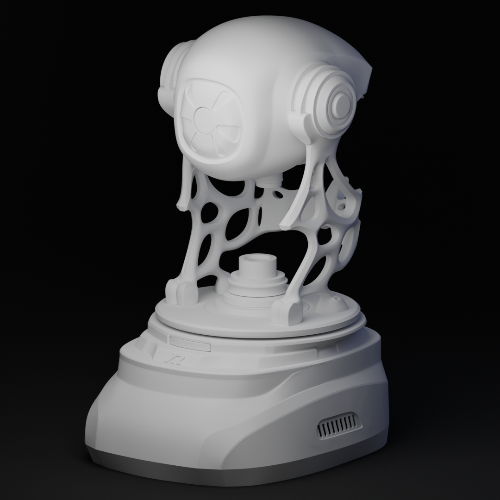
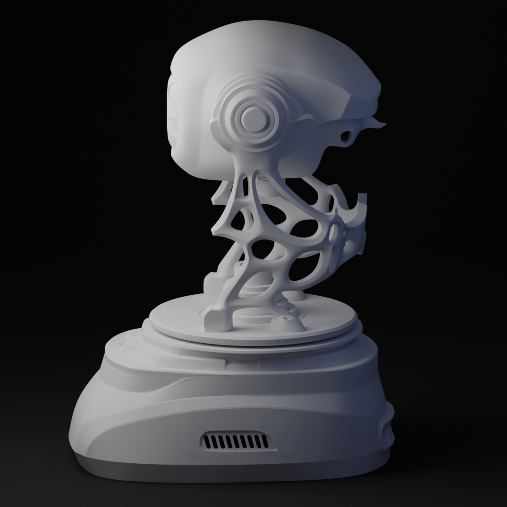
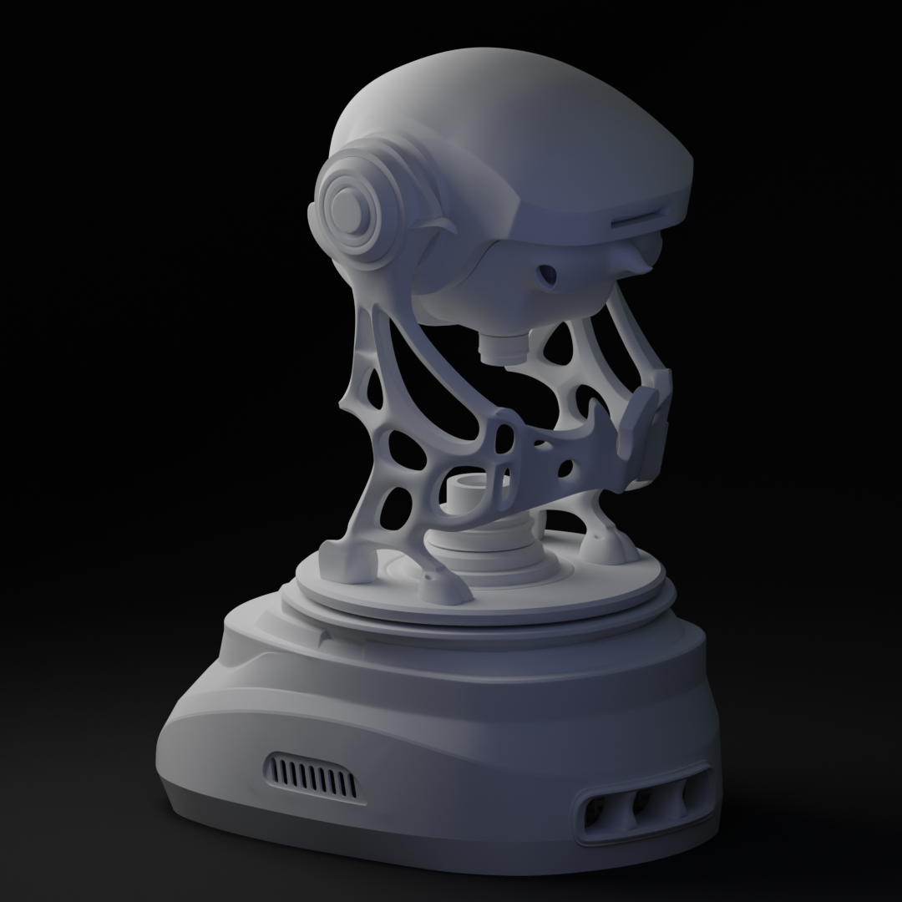
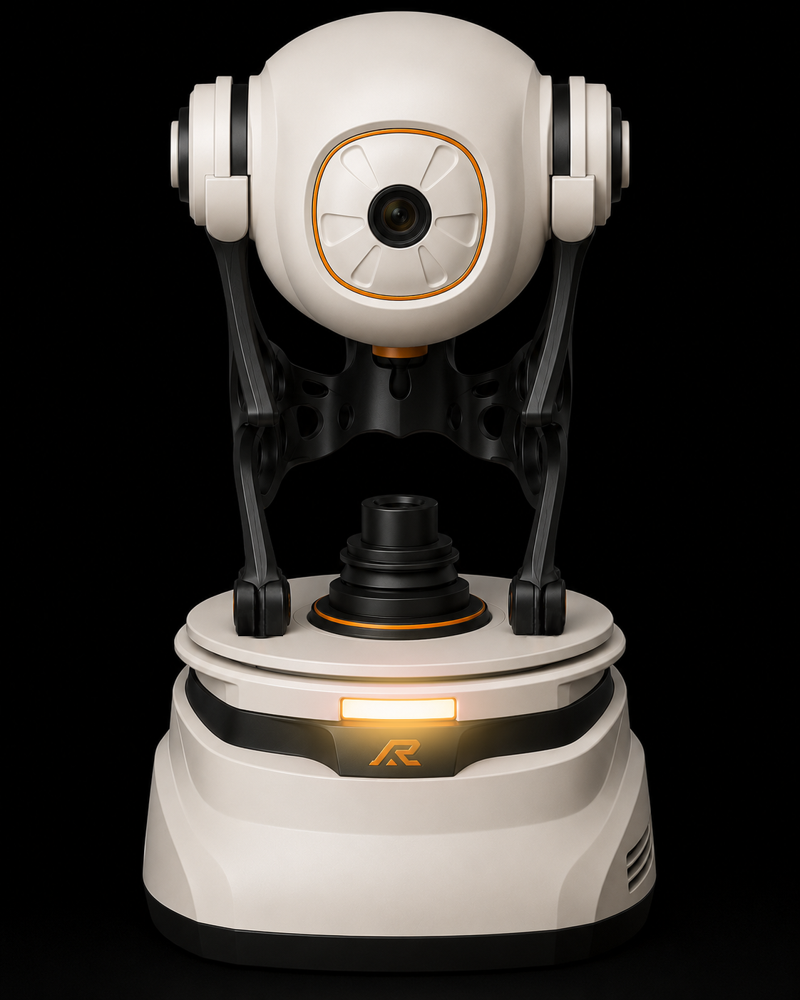
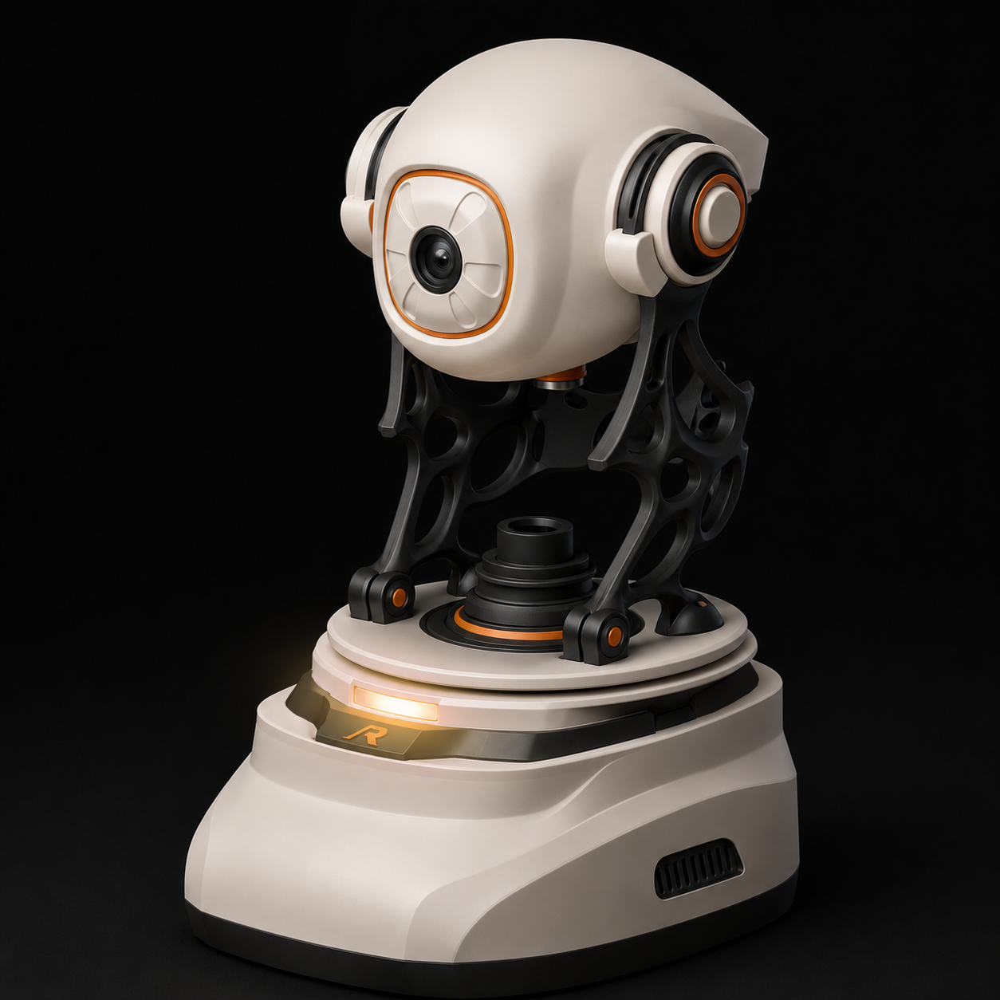
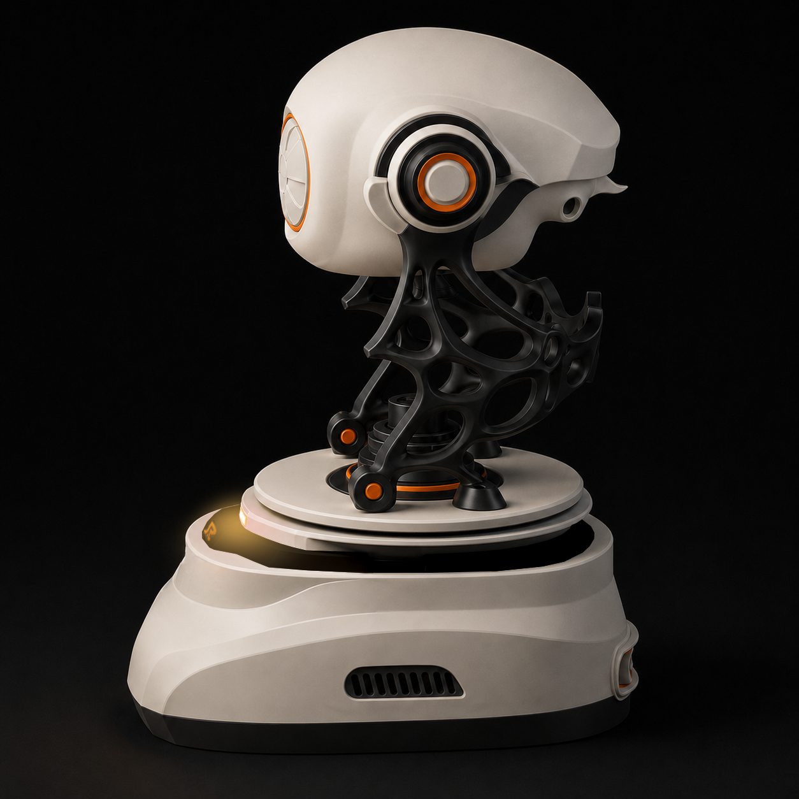
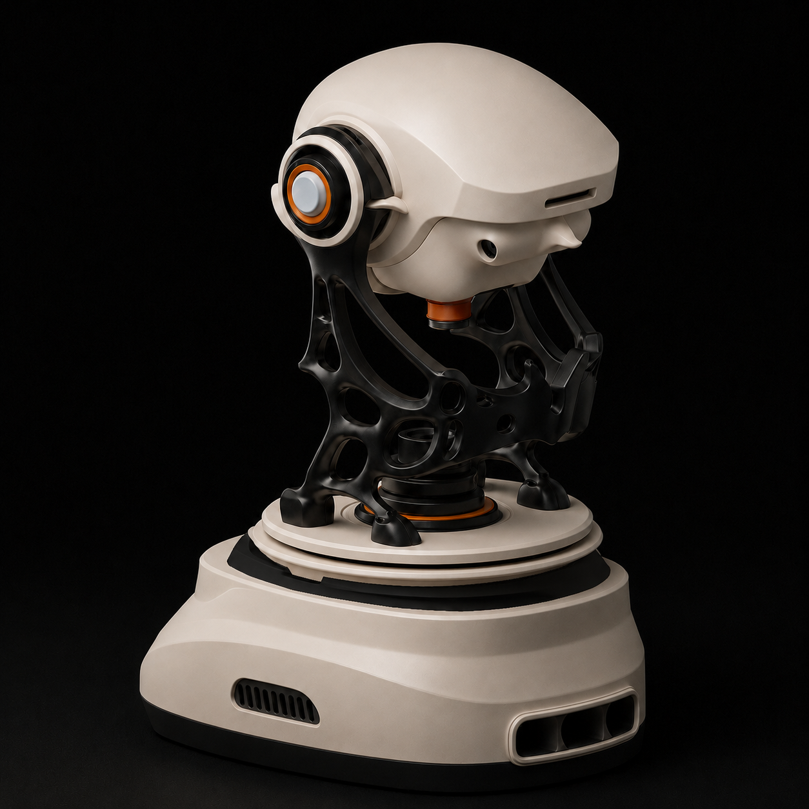

Raspberry Pi 4 (1GB RAM) 完全可行
經實測，採用「雲端大模型 + 本地 MediaPipe Hands」分離式架構，Pi 4 1GB 記憶體與算力完全可滿足需求。記憶體使用約 700MB（裕度 300MB），CPU 使用率 50–70%，完全支援免風扇自然散熱。
樹莓派 Raspberry Pi 4 1GB (主推薦) 與 Pi 5 1GB 雙平台硬體對照，結合雲端大模型（Whisper + LLM + TTS + RAG）、第二代外觀 3D 渲染模型展台與本地視覺（MediaPipe Hands）之全系統量產與可行性分析指南。
收錄第二代 Raspberry Pi 4 AI BOX 機構渲染、俯視視角、正側視視圖、散熱與介面佈局實體概念圖。









經實測，採用「雲端大模型 + 本地 MediaPipe Hands」分離式架構，Pi 4 1GB 記憶體與算力完全可滿足需求。記憶體使用約 700MB（裕度 300MB），CPU 使用率 50–70%，完全支援免風扇自然散熱。
Pi 4 上運行的黃金建議為：相機解析度降至 320×240 或 640×360，使用單手偵測 (max_num_hands=1) 並跳格處理 (skip every 2-3 frames)，可穩定達到 12–20 FPS。
語音識別 (STT) 採用 Faster-Whisper，LLM 使用 Qwen3.5-8B，TTS 使用 Google Cloud (Neural2)。透過管道串流 (Pipeline Streaming)，首字語音延遲僅 0.8–1.5 秒。
| 項目 / 模組 | Raspberry Pi 4 (1GB) | Raspberry Pi 5 (1GB) | 部署與技術建議 |
|---|---|---|---|
| CPU & 處理能力 | 4x Cortex-A72 @ 1.8GHz | 4x Cortex-A76 @ 2.4GHz | Pi 5 CPU 算力提升約 2-3 倍。Pi 4 需注意算力配額，避免高熱降頻。 |
| RAM 記憶體佔用 | 約 700 MB / 1 GB (剩餘 ~300MB) | 約 750 MB / 1 GB (剩餘 ~250MB) | 可行。因語音與 LLM 均移至雲端，本地僅運行 OS + WebRTC + MediaPipe Hands。 |
| 本地視覺 (MediaPipe Hands) | 12–20 FPS (建議 320x240) | 30 FPS (滿影格運行) | Pi 4 務必限制輸入解析度並開放多線程讀取影格。不建議同時運行 Face Mesh 或 YOLO。 |
| 首字語音回應延遲 (Latency) | 1.2 – 1.8 秒 | 0.8 – 1.3 秒 | 雲端 API 回應時間占大頭，硬體效能差異對體驗影響極小。 |
| 熱管理 (Thermal) | 無風扇散熱片即可 (50-60°C) | 建議加裝主動風扇 (Active Cooler) | Pi 4 在量產成本與功耗上具備顯著優勢。 |
| 模型與功能 | 可行性 | 預估 FPS | 推薦指數 | 運作建議 |
|---|---|---|---|---|
| MediaPipe Hands (手部與手勢偵測) |
可行 | Pi 4: 12–20 FPS Pi 5: 30 FPS |
★★★★★ | 專案核心視覺模型。Pi 4 上強烈建議降解析度至 320x240 運行，並使用多線程讀取影格以防阻塞主線程。 |
| MediaPipe Face Mesh (表情與視線追蹤) |
勉強可行 | Pi 4: 8–12 FPS Pi 5: 25–30 FPS |
★★★☆☆ | 運算開銷較大。在 Pi 4 上不建議與 Hands 同時運行，否則極易引發 CPU 滿載與音訊卡頓。 |
| YOLOv8-nano (實體卡牌/道具辨識) |
不推薦 (Pi 4) | Pi 4: 2–5 FPS Pi 5: 10–15 FPS |
★★☆☆☆ | 無 NPU 加速下 CPU 推理極慢。若需在 Pi 5 上運行，建議限制推理頻率。 |
| OpenCV ArUco (二維標記與標籤辨識) |
極佳 (替代方案) | Pi 4: 30+ FPS Pi 5: 60+ FPS |
★★★★★ | 超輕量演算法，對 CPU 與記憶體幾無負擔。若 Pi 4 算力不足以支撐 MediaPipe，是降低成本的最佳替代方案。 |
| SBC 平台 | Raspberry Pi 4 1GB (主推薦) / Raspberry Pi 5 1GB |
| 作業系統 | Raspberry Pi OS Lite 64-bit |
| 本地視覺 (Vision) | MediaPipe Hands（Pi 4: 320×240 / 12–20 FPS；Pi 5: 30 FPS） |
| 雲端 STT | Faster Whisper Large-v3 |
| 雲端 LLM | Qwen3.5-8B Instruct |
| 雲端 TTS | Google Cloud TTS (Neural2) |
| 雲端 RAG | FAISS + BGE-M3 向量檢索 |